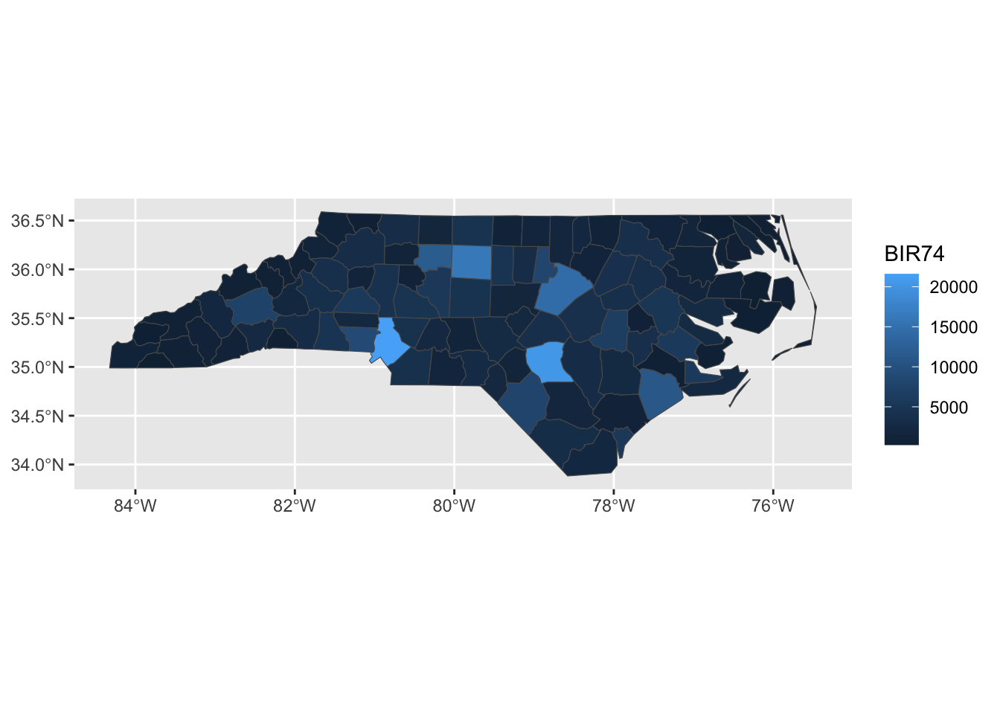
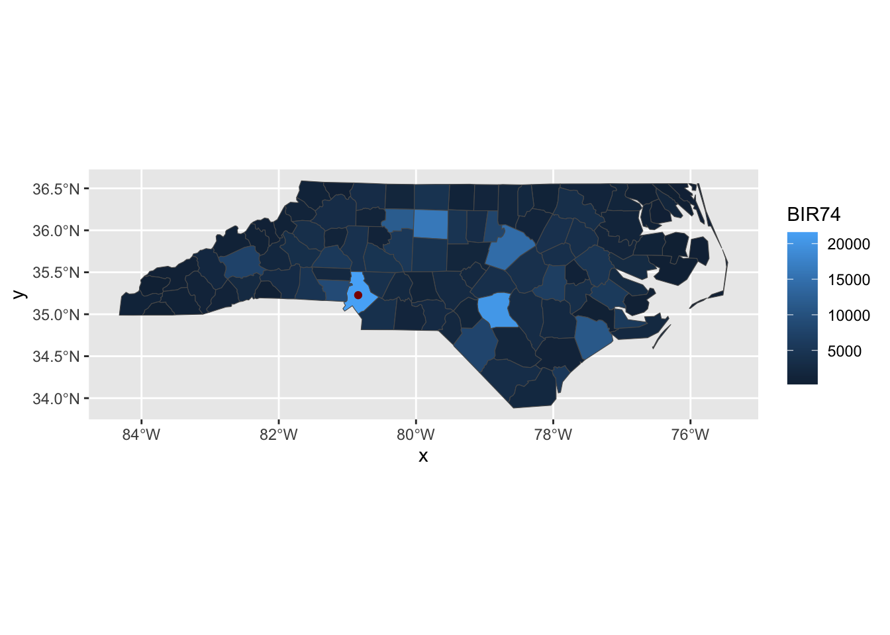
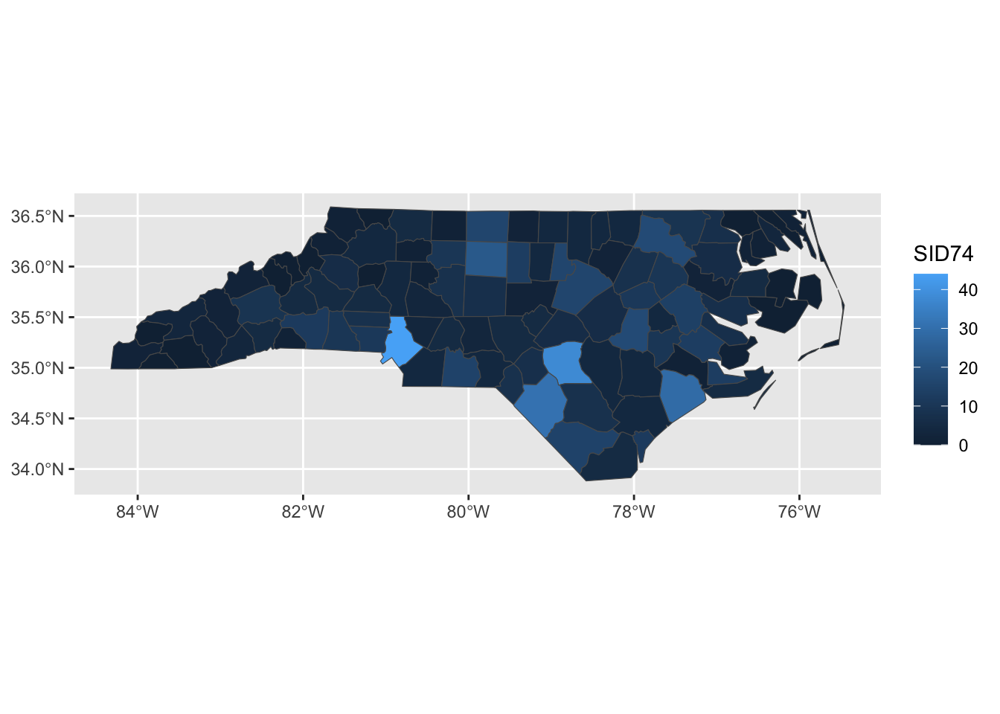

Today, we’re going to dive deeper into ggplot2, with a focus on visualizing spatial data. Spatial data can be quite complex, but we can get pretty far with the simple features (sf) paradigm. Also, if we focus on relatively small regions, we can avoid the complexities that come from Earth not being planar.
Key to this approach is a shapefile. A shapefile, conventionally stored with a shp extension, gives precise coordinates outlining spatial regions. By plotting a polygon with those points at its boundaries, we can visualize spatial regions.
The sf package includes a shp file for the counties of North Carolina:
Note that ggplot2 is doing some work behind the scenes to keep the aspect ratio reasonable and not “stretching” North Carolina north-south.
This is nice enough, if we like maps for maps’ sake, but we can do more. The BIR74 is the number of children born in that county between July 1, 1974 and June 30, 1978. We can use that to set the fills for each county.
library(ggplot2)ggplot(nc, aes(geometry = geometry, fill = BIR74)) +geom_sf()

This type of plot is called a chloropleth plot, coming from the Greek for “area-multitude”. It is commonly used to visualize areal geospatial data - that is quantities associated with spatial regions - as opposed to point data.
Building a chloropleth plot is not too hard, if you have an appropriate shape file. Thankfully, governments are in the business of knowing exactly what the boundaries of their territories are and providing shape files. Typically, these shape files are distributed in a “zip” format, with other geodata files that we won’t use in this course.1
Adding Points on Chloropleths
We can add the City of Charlotte, the largest city of North Carolina on this map:
charlotte <-data.frame(x =-80-50/60-35/60^2, # West = negativey =+35+13/60+38/60^2# North = positive)ggplot() +geom_sf(data=nc, aes(geometry = geometry, fill = BIR74)) +geom_point(data=charlotte, aes(x=x, y=y),color="red4")

Note that I pass different data sets and aes mappings to each layer here, so I do them inside the individual geom_s instead of in the global ggplot() call.
Use ggplot2::geom_sf to create a basic map of NYC’s city council districts. This should just be a plot of the outlines of each district (recognizable as NYC, but otherwise showing no data).
Using the nyc_demos.csv data file, create a chloropleth map of NYC, where the color variable represents the 2010 under 5-year-old population of each district.
Note that you will need to use some dplyr*_join functions to combine the shape data with the demographic data before passing it to ggplot2.2 Which parts of NYC have the fewest young children? Does this seem right?
Under the “one person one vote” principle, the number of adult residents in each council district should be roughly equal. Create a chloropleth plot showing how many more/fewer adult residents each district has than the average district. Are any districts (significantly) over/under-represented on the NY city council?
To do this, you will need to first 1) determine the number of voting age residents in each district; 2) compute the average number of voting age residents per district; 3) see how each district compares to the average (above/below and by how much).
Create a facet plot where each facet is a chloropleth indicating the percentage of residents in each district identifying as a member of each census-designated racial categories.3 Note that the nyc_demos.csv file contains total counts by race, so you will need to normalize by overall population to get percentages.
To get the data into suitable form for plotting, you will need to pivot the data into a longer format using the pivot_longer function from the tidyr package.
Create a visualization to compare the ratio of rental vs owner-owned housing per district with the age demographics of this district. What do you find? Is this what you would have expected?
Limitations and Extensions of Chloropleths
Chloropleth plots are rightly popular but they have a major limitation: humans are not uniformly distributed across space! Smaller regions may have higher populations (cf Connecticut vs Montana) and administrative regions are not the same size. Because human perception is naturally drawn to larger regions, we often need to adjust the color schemes used to compensate for area effects. This process can be powerful, but it is a bit difficult to get right.
For instance, let’s see what happens if we create a chloropleth of the SID74 data, the number of children who die of SIDS during our sample period in North Carolina:
ggplot(nc, aes(geometry = geometry, fill = SID74)) +geom_sf()

Here, Mecklenberg County (middle, bottom) sticks out because it has a large population, not because SIDS was particularly more common in that county. We can modify our plot to show the SIDS rate, rather than raw counts:
We see less variation here, but there is still some. Note that this type of data – rate estimation from rare counts – can be somewhat tricky to analyze, but that’s not the primary focus of this class so we’ll leave it here.
This plot still isn’t perfect however: Sampson county is the largest county in NC, but it has a relatively small population. That means that the largest area - and hence the place our eyes will most immediately look - is assigned to a relatively unimportant county. Relatedly, Anson County is a small population county, but it appears to be a “hot-spot”. This could be true, but it is more likely a noise-effect resulting from a small population.
To address these issues, we can use a cartogram which will “adjust” the map so that area maps to a relevant quantity. This is quite complex mathematically, but the cartogram package handles it reasonably transparently for us:
Here the st_transform function species what projection to equilibrate area in. I’m not an expert on this, but the internet seems to suggest 26916 is not a bad default.
Looking at this plot, we see that counties are now adjusted to population, or really birth count and Anson county - while still high - is clearly down-weighted in accordance with its population.
Exercises 2 - Cartograms of NYC
Modify your plot of NYC to adjust city council districts by area.
Next, modify your analysis to use the Dorling cartogram (cartogram_dorling) which gives a more regular cartogram representation.
shiny: Creating Interactive Tools for Data Analysis
We now turn our attention to creating interactive tools (web applications and dashboards) for data analysis. By learning these tools, you won’t necessarily enable yourself to do analysis, but you will enable colleagues and clients to more fully explore the results of your analyses. The main tool we will use to do is shiny, a reactive framework for R.
“Reactive” programmingrefers to an architecture that changes only in response to user input. You have almost certainly worked with a reactive piece of software in the form of Microsoft Excel (or Google Sheets or similar). The values in the spreadsheet do not change sua sponte, but when you make an input all related cells are updated. (Conceptually, all cells are updated, but Excel is smart and tracks only those cells that actually need to be updated.)
Exercise 3 - Building a shiny tool for STA 9750
Use the course helper functions to build a shiny tool that can be used to verify that your mini-projects and peer feedback have been appropriately formatted and submitted.
Step 0: Run shiny
Take the following prototype and confirm that it runs on your computer. Note that this is the “single-file” format for shiny apps. It is somewhat more common to split shiny apps across two files - backend and frontend - but we are using a single file structure here for convenience.
if(!require("shiny")) install.packages("shiny")library(shiny)if(!require("glue")) install.packages("glue")library(glue)if(!require("yaml")) install.packages("yaml")library(yaml)# Create global variables herevariables <-read_yaml("https://raw.githubusercontent.com/michaelweylandt/STA9750/refs/heads/main/_variables.yml")course_repo <- variables$course$repocourse_short <- variables$course$short# Define the UIui <-bootstrapPage(textInput('github_id', 'What is your GitHub ID?', placeholder="Type your GitHub ID here"),htmlOutput('gh_link'))# Define the server codeserver <-function(input, output) { output$gh_link <-renderText({markdown(glue("My code for this course found on [GitHub](https://github.com/{input$github_id}/{course_repo})")) })}# Return a Shiny app objectshinyApp(ui = ui, server = server)
Step 1: Add a Link to your profile
Add a second output to link to the homepage you created in MP#00. Copying the treatment of gh_link in the example, you will need to
Add a second output renderText component in the server
Add a second output htmlOutput component in the UI
Step 2: Parameterize the Mini-Project Number
Next, extend your app to handle the mini-projects. Modify the above example to do three things:
Add a numericInput that takes a number between 1 and 4 inclusive to select a mini-project.
The glue function can be used to easily substitute values in URLs (as in the example).
Add an output htmlOutput element that adds a link to your mini-project submission. This URL should take both the numericInput and the textInput user inputs to construct the URL. (That is, if you change the GitHub name used the URL should point to a different repo)
Step 3: Confirm Mini-Project Submission
Take one of the course helper scripts and use it to determine whether a given MP submission is properly formatted. To do so:
Load the helpers by adding source("https://michael-weylandt.com/STA9750/load_helpers.R") to the top of your file (outside both the UI and the server).
Add a reactive input that runs mp_submission_verify and captures the output. The following code snippet will be useful:
O <-capture.output({ E <-tryCatch(mp_submission_verify(N, github_id), error=function(e) e)})if(isTRUE(E)){ MESSAGE <-"Mini-Project properly submitted."} else { MESSAGE <-"Mini-Project not properly submitted. Issue appears to be:\n" MESSAGE <-paste(c(MESSAGE, O[1:2]), collapse="\n")}
where you use MESSAGE in creating your output.
Step 4: Extensions
Time allowing, do one or more of the following:
Adapt mp_feedback_locate to provide links to all peer feedback issues. Note that you will need to handle the case of later MPs, who haven’t been assigned yet (i.e., MPs #03 and #04).
Adapt mp_feedback_verify to check whether your peer feedback has been properly formatted. This will require a new input for the peer’s GitHub ID.
Footnotes
In MP#03, you will learn how to extract the shp file from a zip archive automatically, but for now you can do so “by hand” by opening the zip file as if it were a regular file.↩︎
If you get an error reading “stat_sf() requires the following missing aesthetics: geometry”, make sure you include geometry=geometry in your aes (5 points)↩︎
These are c("White Hispanic", "Black Hispanic", "Asian and Pacific Islander Nonhispanic", "Other Nonhispanic", "Two or More Races Nonhispanic", "Hispanic Origin"). Note that the census has changed these over time and the categories for the 2020 and 2030 censuses will be different.↩︎